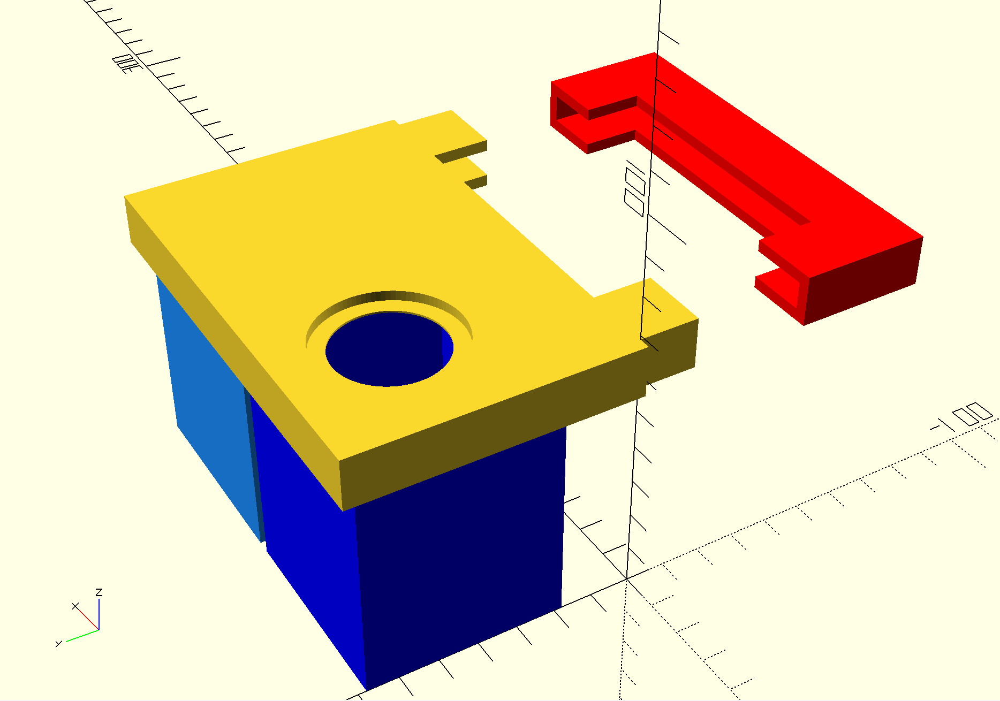
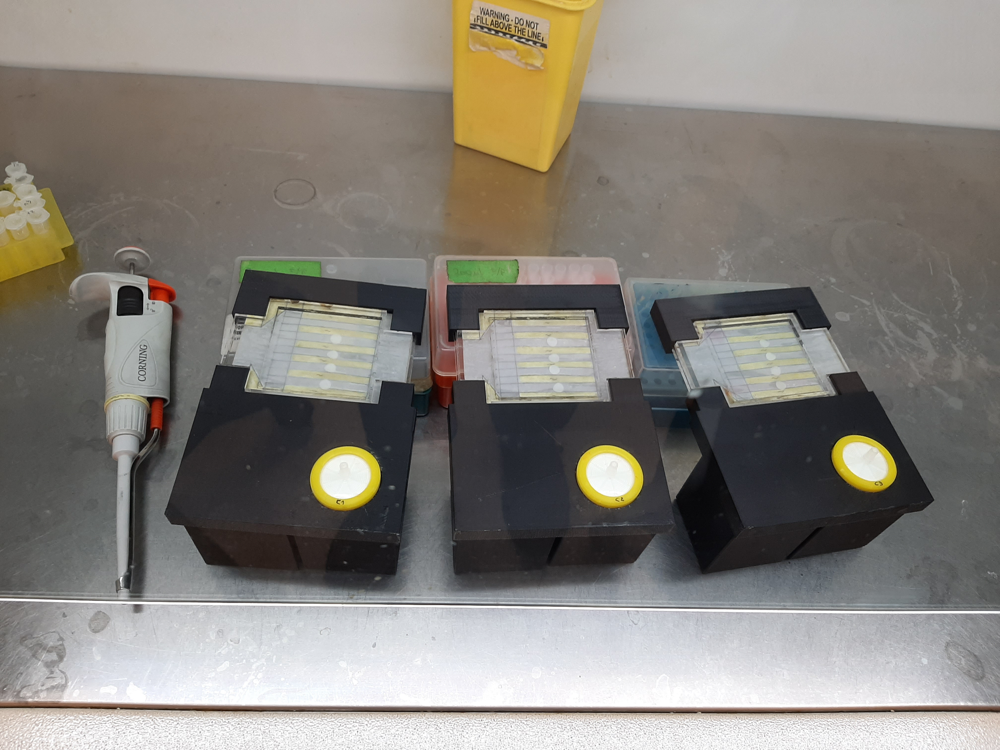
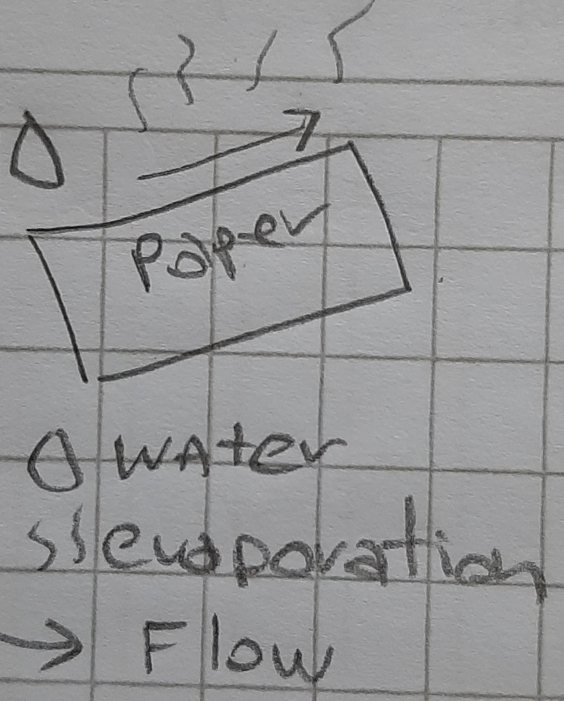
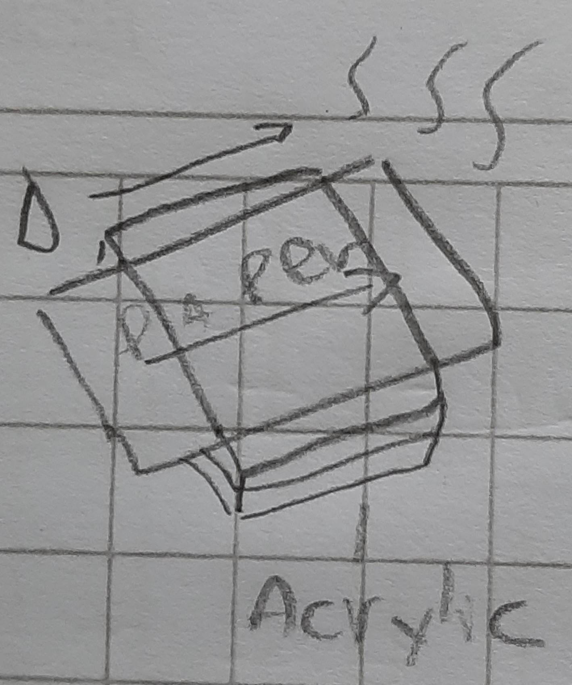
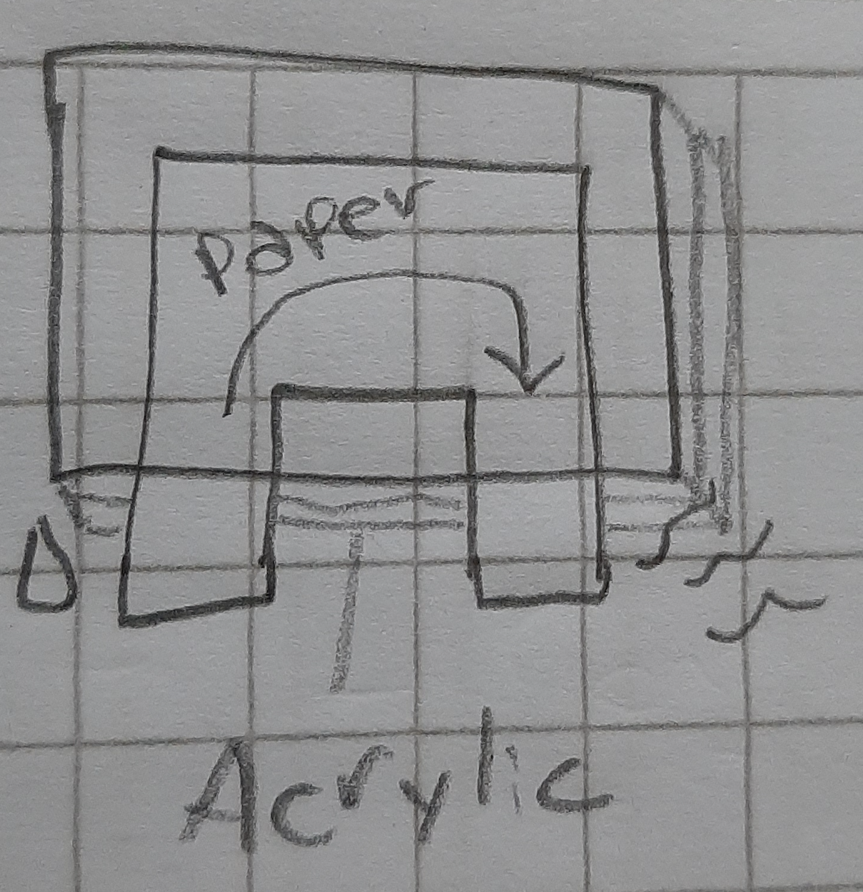

Welcome to the Corchea website! The name of this project comes from the musical note quaver or eighth note, in spanish corchea. The first version of the device on 2017 used two petri dishes connected with a U shaped strip of paper look very similar to corchea, more specificaly to the unicode symbol U+266B for corchea. A musician friend makes me note that in fact that shape is a double corchea, but is too long and I have too many files with this name so it will remains as Corchea.

Corchea's design v3
In the lab
Results

Corchea use paper capilarity to move fluids across the paper, like candles or plants. There are two regimes, capilarity when paper is dry and wet-flow when paper is fully wet by the Darcy Law.
In Corchea one end of the paper is submerged in liquid (dye, media), the rest of the paper is covered with acrylic to avoid evaporation except for the opposite end. This create a pressure difference that makes liquid flow towards the evaporating end.
In our design both ends of the paper are at the same side making it easy to plug into a transilluminator or imaging station like FluoPi, to transport and to use.
Education content
Corchea works as a hardware platform to pass a sample through a biosensor. It can sample continuously and detect changes on the environment. You can analyze the response or output usig Corchea_DiscAnalyze_Pulse
Here is a list of possible tasks you can help with. Remember that you can help in things that are not in this list, just contact us and tell us how you want to cooperate or what do you want to do.
Hardware
- Designing/optimizing the paper-fluidic setup
- Customizing the design to your needs
- Testing the setup
Software
- Creating/optimizing analysis code
- Recognition and segmentation of objects
- Deep learning CNN, LSTM, RNN
- Tensorflow implementations
Biology
- Microbiology
- Environmental microbiology
- Creating/testing biosensors
- Creating/modifying/testing genetic constructions
- Implementing new reporters (fluorescent, colorimetric, enzimatic, etc)
- Biomaterials
Content
- Creating new educational content using Corchea
- Creating new experiments using Corchea
Using the device and give us feedback, we will apreciate it!
Why should we work together?
If you like to learn doing projects, you are a maker or you just want to contribute this is a fun open-source interdisciplinary project to be part of. It uses, 3D printing, laser cut, paper-based microfluics, microbiology, synthetic biology, data science. Did I mention that is also low-cost so it is not expensive to replicate, and you can do it in the comfort of your home or lab (with apropiate sterility protocols if necessary). So yeah, what are you waiting for? an invitational letter? (This message count as invitational letter) Also is highly probable that the results will be published in an Open Acces peer-reviewed scientific journal or at least a BioRxiv preprint and you can be a co-author!